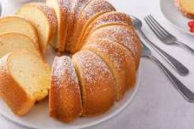
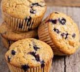
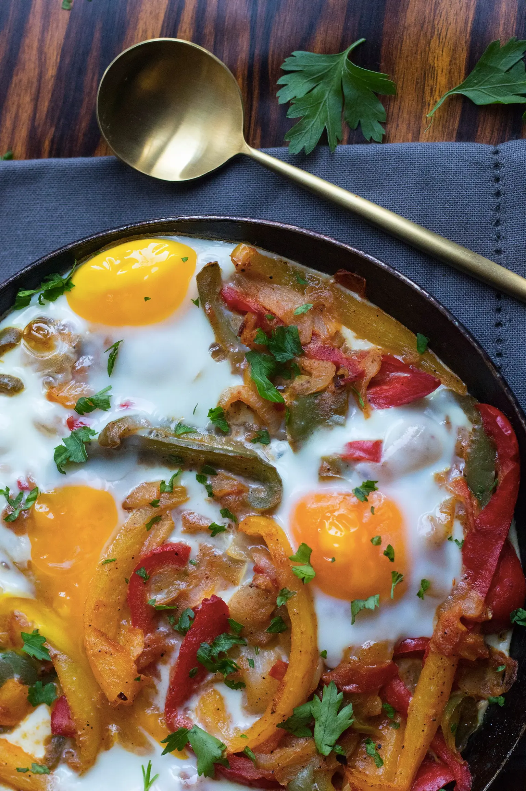
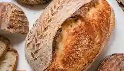
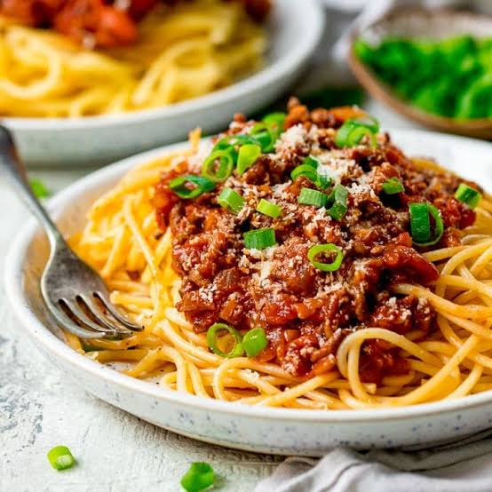

My Recipes
Sweet
Recipe 1

Cookies are one of the most popular snacks. Easy to make and delicious, they're the go to for many.
For the recipe click on the button.
Recipe 2

A vanilla cake is a well loved classic. Soft and moist, it makes the ideal afternoon treat.
For the recipe click on the button.
Recipe 3

Muffins are an easy snack to have around your home. It's simple and kids love it.
For the recipe click on the button.
Salty
Recipe 1

Chakchouka is one of easiest and tastiest mediteranian dishes. Containing vegetables and eggs, it makes a healty meal to craft.
For the recipe click on the button.
Recipe 2

Sourdough bread is the best option to replace white bread. It's healthier and tastier, though it's a bit tricky to bake, it's something you should try some time.
For the recipe click on the button.
Recipe 3

Spaghetti bolognese is the go to recepe of many. It's simple, fast and tastes incredible.
For the recipe click on the button.